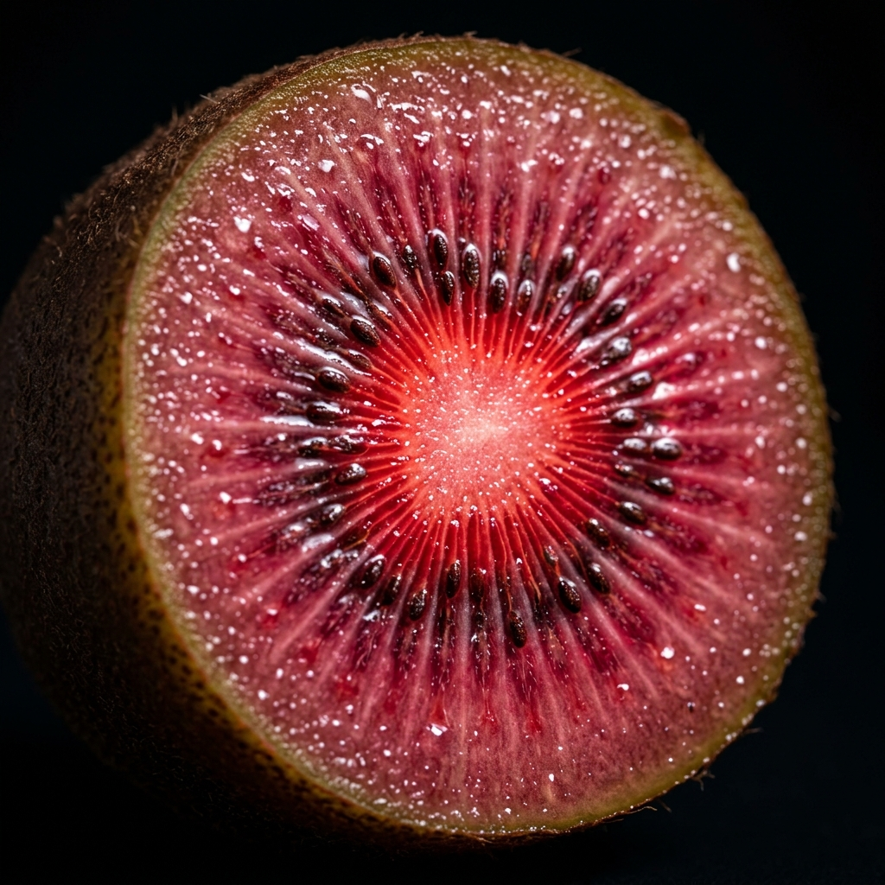
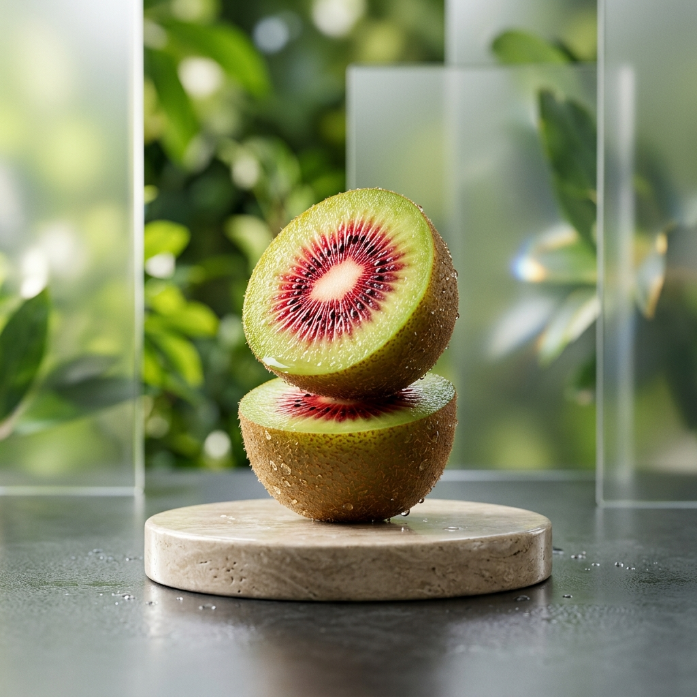
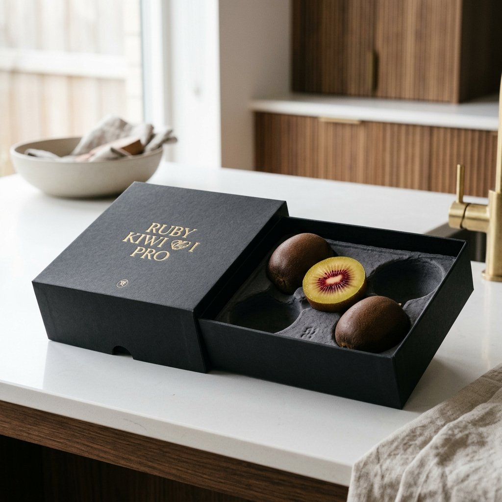

Ruby Kiwi PRO
이것이 키위의 프로.

놀라운 속살.
보이는 그대로의 루비.
일반적인 키위는 잊으세요. 루비 키위 PRO는 혁신적인 안토시아닌 코어를 탑재하여, 한 입 베어 무는 순간 강렬한 붉은 에너지를 전달합니다.
20+ Brix
압도적인 당도 프로세서.
Ultra Smooth
부드러움의 차원.
Long Lasting
더 길어진 신선도.
Red Heart Chip
자연의 가장 진한 코어.
티타늄보다 단단한 영양.
루비보다 빛나는 맛.

마스터 아티잔.
루비 키위 PRO는 단순한 재배가 아닌, 예술의 영역에서 탄생합니다. 대를 이어온 농부들의 정성과 첨단 스마트팜 기술이 만나 가장 완벽한 루비를 빚어냅니다.

Master Certified